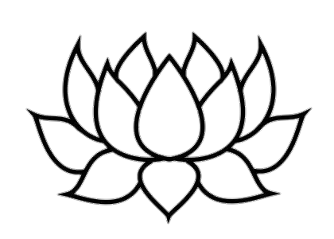

Deep Dive Into Soul Space
An Experiential Psychedelic Training RetreatImmersive 4-Day Residential Retreat
Combining body-centered therapeutic techniques with guided meditation, movement, breathwork, and optional hallucinogenic-substance support, this retreat is an opportunity to take your personal growth, empowerment, and sense of connection with ALL THAT IS to the next level!
*Optional hallucinogenic medicines available
This is a highly personalized, transformative retreat with skilled facilitator and body-centered (somatic) therapist Cia Ricco, her helpers, and trainees. You will have the opportunity to:
- Break through trauma and heal old wounds while being lovingly and expertly supported
- Experience profound Breathwork Rebirthing
- Try two or more psychedelic substances (optional) known to help release depression, anxiety, fears, and addictive tendencies, and create a deeper sense of connection
Leave with a greater self-understanding and actualization, healing/wholing, a connection to the natural world, other beings, and your personal sense of the divine!
Retreat Highlights
- Body-centered therapeutic techniques
- Meditation, Movement, Breathwork
- Healing & Trauma Release
- Optional Psychedelic Experiences
What’s Included
- 4 Nights Accommodation
- All meals (healthy, fresh and delicious)
- Morning Yoga
- Creating Sacred Space
- Setting Intentions and Journal Prompts
- Introduction to and sampling of Essential Oils as Plant Medicine
- Human Design (a system akin to astrology for self-discovery and understanding)
What’s Not Included
- Air Fare
- Transportation to and from airport
Optional Add-Ons
- Therapeutic Massage
- Reiki/Energy Work
- Chinese Fire Cupping
- Ayurvedic Principles
- Cranial Sacral Work
- Shiatsu Style (with option of floor mat session)
Maximum Group Size
20 guests
Accommodations | Room Options
- Private
- Semi-private (share with 1 person)
- Bunk (1 room 4 beds, 1 room 5 beds)
- Dorm (9 beds)
Food & Dining
We proudly support all diet types, including but not limited to:
- Vegan
- Pescetarian
- Gluten Free
- Dairy Free
- Nut Free
- Vegetarian
- Ayurvedic
- Organic
The food provided will be prepared on site by an experienced cook. All dietary preferences will be catered to, ensuring maximum nutritional value and tasting pleasure.
Itinerary
Dates
September 26th - 30th
Join us for a 4-day immersive retreat.
If you’re interested in a private or couple’s intensive with Cia instead of, or in addition to, the group retreat, she’s also offering a private 3-night stay in Woodstock, NY, on the following dates:
- September 18th-25th
- October 1st-8th.
Inquire for more information on private intensives available before and after the group retreat.
Day 1 - Thursday +
- Morning - Check-in
- Afternoon - Welcome Session
- Evening - Opening Circle
Day 2 - Friday +
- Morning - Yoga Session
- Afternoon - Group Therapy
- Evening - Meditation
Day 3 - Saturday +
- Morning - Breathwork Session
- Afternoon - Personal Time
- Evening - Group Discussion
Day 4 - Sunday +
- Morning - Nature Walk
- Afternoon - Creative Workshop
- Evening - Sharing Circle
Day 5 - Monday +
- Morning - Closing Ceremony
- Afternoon - Brunch
- Midday - Farewell and Departure
Optional Activities and Classes at No Additional Cost
- Morning Yoga
- Creating Sacred Space
- Setting Intentions and Journal Prompts
- Introduction to and sampling of Essential Oils as Plant Medicine
- Human Design (a system akin to astrology for self-discovery and understanding)
Also Available at an Additional Fee
THERAPEUTIC MASSAGE! (Availability is very limited. Please inquire & book well before the retreat!)
Our therapist, Katy McLaughlin, is a Reiki Master who specializes in Magical Awakening Energy Healing. Katy is highly skilled with individualized restorative massage which may include:
- Reiki/Energy Work
- Chinese Fire Cupping
- Ayurvedic Principles
- Cranial Sacral Work
- Shiatsu Style (with option of floor mat session)
Photo Gallery
Who will benefit from attending the retreat?
Participants come from two general categories: professionals, and those looking for personal growth.
Professionals
With an interest in gaining skills for use in their practice. All those in the helping professions are welcome, including but not limited to:
- Mental health professionals:
- Social workers
- Psychologists
- Psychiatrists
- Psychotherapists
- Healers such as:
- Energy workers
- Body-workers
- Doctors
- Nurses
- Those supporting anyone who may be dealing with pain and fear of death, such as:
- Death doulas
- Hospice workers
Personal Growth and Empowerment
Is for anyone looking to go deeper in their healing, bring light to shadows, or simply explore what this rapid transformative work can provide. Personal growth may mean healing from trauma, breaking through addiction, depression, anxiety, dealing with chronic pain or fear, wanting new insights on life choices and directions, and wanting a greater sense of connection in their lives.
Personal growth may also mean coming for a deeper spiritual understanding of the greater whole and a profound connection with All That Is.
What You Can Expect to Gain
Through a combination of therapeutic techniques including somatic work, guided meditation, movement, breathwork rebirthing, and optional hallucinogenic substances, all participants may expect to:
- Reach new inner depths while having a transformative healing experience
- Gain insight and clarity
- Release and let go of long standing blocks in the form of belief systems and life choices
- Experience deep healing and rapid transformation
- Leave with a refreshed state of self-awareness, personal power, and freedom
In addition, if you are a healer or mental health professional seeking new tools to enhance your practice, you may also expect to:
- Expand your knowledge and understanding of psychedelics as powerful allies.
- Learn new tools for helping clients heal from trauma and long-standing stuck patterns.
- Gain facility with supporting clients through deeply transformative cathartic work with or without the use of substances.
Testimonials
Cia put out so much energy, love, and care for each one of us during our time together. I am grateful for receiving so much more than I could have imagined from the retreat. It was so wonderful to be in her presence--and take in the love and wisdom she shared with me and the group during the retreat.
The group provided a great container to delve into deeper layers of my psychological stuff that were standing in the way of fully connecting with myself and the life around me. It was truly inspiring to experience the power of being in a group setting in the expanded states of consciousness with a gifted facilitator like you!
This experience has been transformative. I know my life will never be the same. I am grateful for the incredible sense of community support that Cia created over the weekend. The retreat brought so many life lessons and insights that I know will forever stay in my heart. Cia’s love is abundant and unmatched. Thank you for opening up the doors to this new way of seeing life.
I am so grateful for this work and the caring attention I received. Thank you to everyone involved for creating such a loving and safe environment, for modeling how to get your needs met, and for the vulnerability and the wisdom shared. Ibe will bring myself back to the love that I’ve been flooded with over the long weekend in future times of strife.
This is powerful work with multiple approaches that go deep. I feel so fortunate and grateful for being part of this. I learned so much about myself and took away from it that we are all deserving of both external and internal acceptance and love. I now believe that everything happens as it needs to.
I got a lot out of the breathwork and optional activities such as a class in essential oils. Most powerful of all was my individual time with Cia. It was work I have not been able to do alone. I felt so “met”. My work with Cia and the group counteracted a hurt and sadness that had been very deep inside.
The retreat Exceeded my expectations. Gratitude and acknowledgement to you, Cia, for all you that you are and all that you have done.
Travel Information
The retreat will be held at The Manor at Bethel Landing in Bethel, NY.
Nearest Airports:
- Stewart International Airport (SWF) - 48 miles
- Albany International Airport (ALB) - 108 miles
Public Transportation:
The nearest major bus station is in Monticello, NY, which is approximately 11 miles from the retreat location. Bus services like Short Line Bus provide routes to Monticello from various locations. Taxi services and rideshare options like Uber and Lyft are available from Monticello to Bethel.
Driving Directions:
Detailed driving directions will be provided upon registration. If you need transportation from the airport or bus station, please contact us to arrange shuttle service.
Parking is available on-site.
Register for Retreat
To register for our upcoming retreat, please contact the therapist directly:
Frequently Asked Questions
Q: Do I need prior experience with psychedelics to attend?
It’s not necessary to have prior experience at all. You will be in a safe space, supported and guided, and in complete control of what you choose to partake in. You will have the opportunity to meet with Cia by phone before the retreat to ask any questions and discuss what might be right for you.
Q: What kind of support is available post-retreat?
We offer post-retreat integration support, including follow-up sessions, resources, and access to a supportive community to help you process your experience.
Q: What types of consciousness-altering substances are offered?
There will be three different medicines available, both heart and mind-opening. If you are new to any of them, you will have a choice of two. You can decide on which two when speaking with Cia. If you are already experienced with two of them, you might be approved for a combination. In some cases, if you have a very high tolerance, you may be given a non-hallucinogenic natural supplement to boost the effect of the conscious-altering substance. For more details please reach out to Cia to discuss by phone.
Q: Can I decide later on if I’d like to partake in the psychedelics?
Absolutely. Medicine is always optional. Even if you discuss in advance what you will try and a dose has been prepared for you, you can change your mind and opt-out at any time.
Q: What is the cost of the retreat?
A fee schedule will be provided with your intake form. The fee for the retreat will be based on two things: 1. Whether you are coming for training or only for personal growth. 2. What lodging (private, semi-private, bunk, or dorm) you select. In addition, discounts may apply for early enrollment, cash (non-credit card) payments, and referrals.
Q: What is the cancellation policy?
A 50% deposit is non-refundable but may be credited toward a future retreat if you need to cancel due to an emergency. The other 50% is fully refundable up to two weeks before the retreat.
Are you a social worker or helping professional interested in expanding your therapeutic skills and integrating innovative techniques into your practice?
Join us at our retreat for a comprehensive training experience designed specifically for professionals like you.
This retreat offers:
- In-depth training on body-centered therapeutic techniques
- Guided meditation and movement sessions
- Breathwork rebirthing practices
- Optional hallucinogenic-assisted therapy sessions
- Personal and professional growth opportunities
Led by experienced somatic therapist Cia Ricco, this retreat provides a unique opportunity to experience powerful healing modalities firsthand, enhancing your ability to support clients effectively. You will leave the retreat with a deeper understanding of these transformative techniques and how to incorporate them into your practice.
Don't miss this chance to advance your skills and rejuvenate your practice.
Register today and take the first step towards becoming a more effective and holistic practitioner.
.